Ghost (CMS) is nice and I've used it for a couple years but with the start of my company my blog got less attention, got broke and went offline, never to be fixed. In summary, running ghost yourself is work. Not necessarily a ton of work but work nontheless.
So I decided to resurrect my old blog and move it to a fully hosted platform. My decision fell on blogger as it is completely free, plays nice with Google Analytics and SEO (being a Google product) and has a couple of notable changes since its early days - most importantly, better themes and the ability to custom style them.
My first issue was, that my old ghost powered blog wasn't online anymore so I had to get it up and running again, in order to copy the old content to the new platform. Luckily, I still have the raw setup files from /var/www/ and the most recent database backup.
Since the original server was in an unusable state (and running Ubuntu 14.04!), I decided to run the resurrection ritual on a local virtual machine.
First thing to notice here: I'm currently running Windows 10 instead of my usual Kubuntu setup, so I was first considering using Putty to SSH into my VM. I then decided to give the SSH feature in Windows a try and lo and behold, it is a beaut.
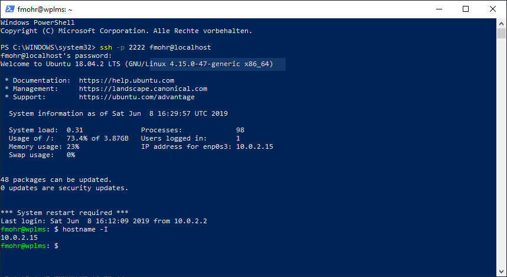
Thanks to this nifty little feature, I can use both scp and ssh directly from a Powershell window.
I copied the files over to my machine, which is running on a NAT interface with port-forwarding, hence the port 2222 on localhost. Once the copy job was done, I set out to install the most important packages to get started.
fmohr@vm$ sudo apt install unzip nodejs npm mysql-server
Now with the bare necessities in place, it was time to restore the database to its former glory.
fmohr@host:~/$ scp -P 2222 .\ghostdb.sql fmohr@localhost:~/
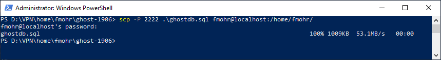
fmohr@vm:~/$ sudo mysql -u root < ghostdb.sql
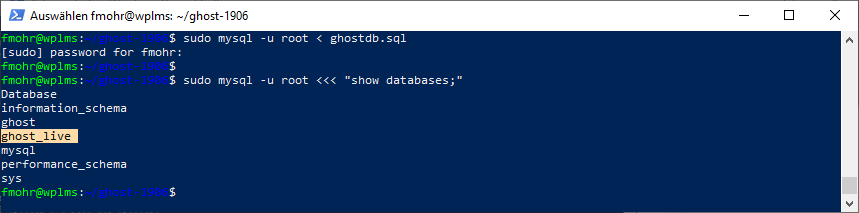
Success! I can now try to adjust the ghost settings file and start the nodejs server.
fmohr@vm:~/$ vi config.js
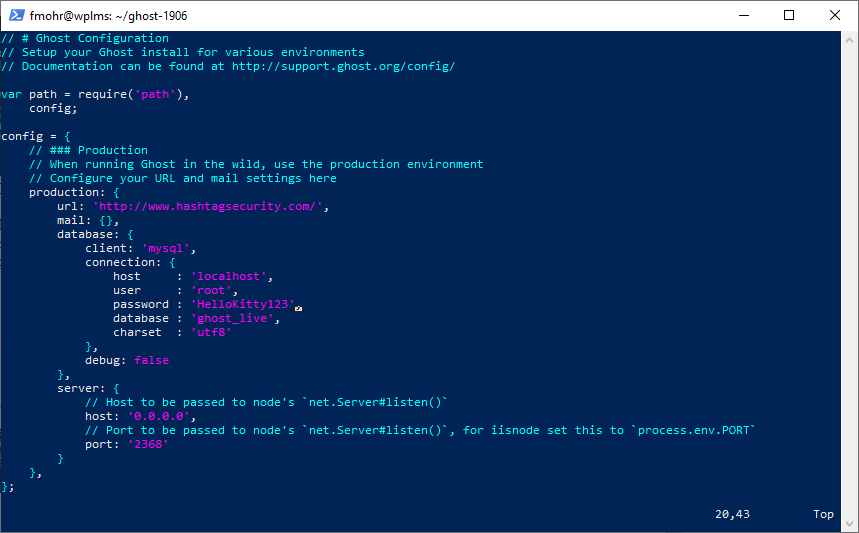
Of course I had to change the database connection, namely: host, user and password from the live environment to my local test machine.
In order to even try and run the server, the necessary dependency packages need to be installed. It becomes pretty clear early on, that this ghost installation hasn't been updated in a while.
fmohr@vm:~/ghost$ npm install
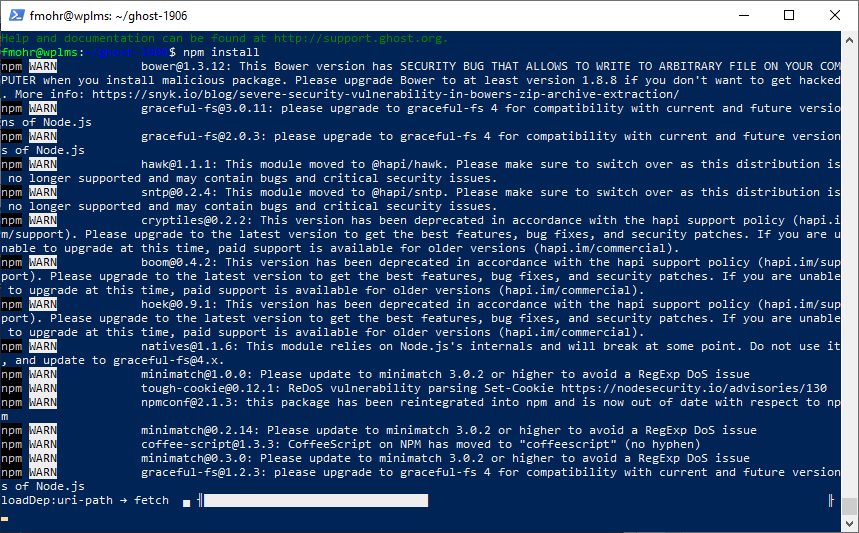
Unfortunately, all this brought me was a bunch of error messages.
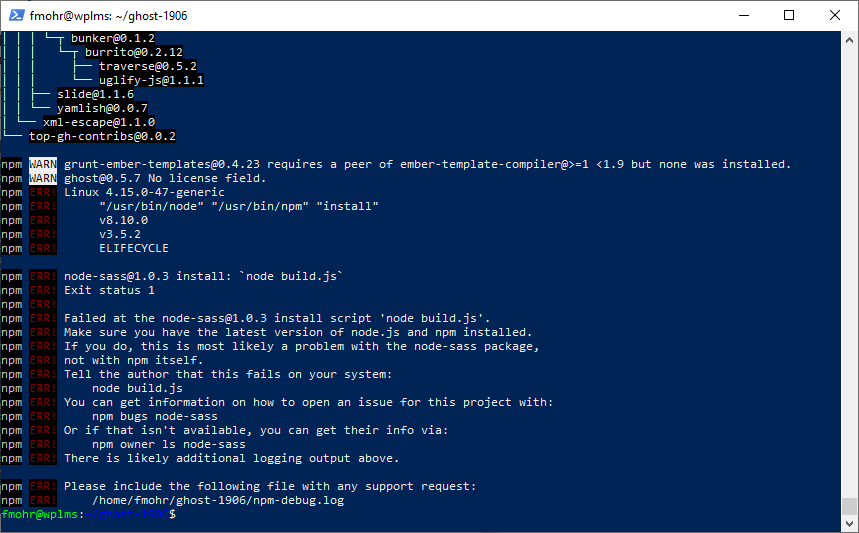
Trying to run the server first gave me this error:
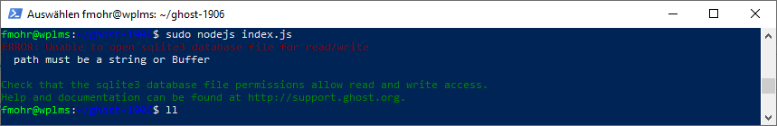
After a bit of Google-fu I half found out, half remembered that the NODE_ENV variable had to be set in order to use the production settings from the config.js file.
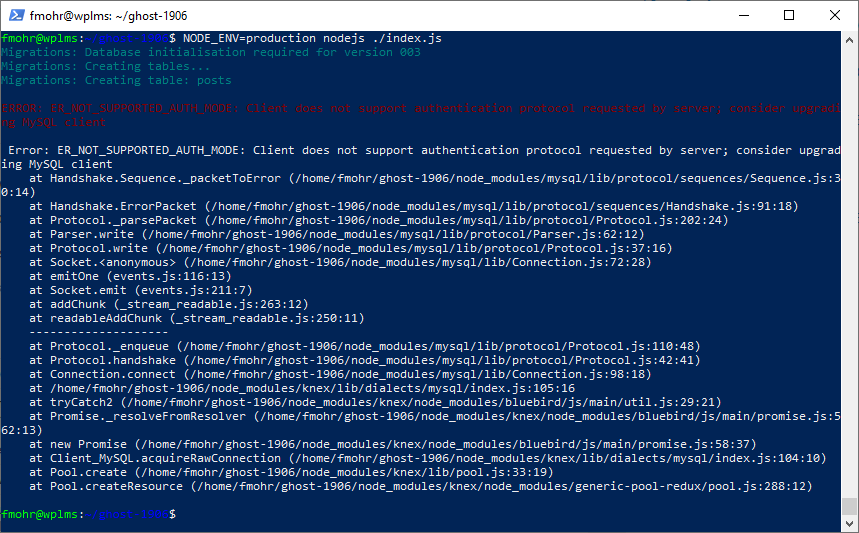
This resulted in a different error. Two steps forward, one backwards.
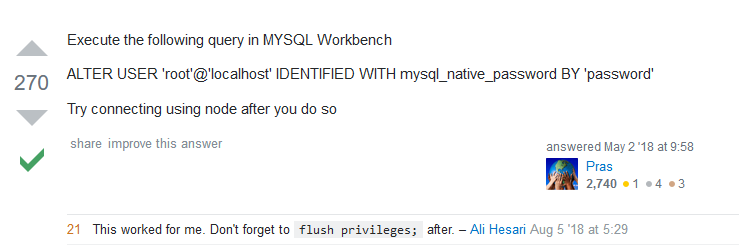
Stackoverflow to the rescue! The solution was to downgrade the mysql authentication method.
fmohr@vm:~/ghost$ mysql -u root -p
mysql> ALTER USER 'root'@'localhost' IDENTIFIED WITH mysql_native_password BY 'HelloKitty123';
mysql> FLUSH PRIVILEGES;
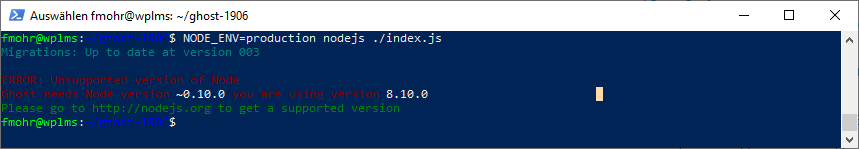
Well, this certainly got rid of the mysql authentication error but spawned a new one. Luckily there is a solution for everything. And once again, its name is downgrade. This is best done by using NVM, the node version manager.
fmohr@vm:~/ghost$ curl -o- https://raw.githubusercontent.com/creationix/nvm/v0.33.8/install.sh -o install.sh
fmohr@vm:~/ghost$ less install.sh
fmohr@vm:~/ghost$ sudo bash install.sh
The originally suggested command for installing NVM was the following:
curl -o- https://raw.githubusercontent.com/creationix/nvm/v0.33.8/install.sh | bash
You may have noticed that I changed the procedure. Since this is a security focused blog, let me quickly explain why.
Spoiler: Never pipe unknown shell scripts to bash. NEVER! Ever! EVAAA!
The following commands install the most recent node version as well as the desired one.
fmohr@vm:~/ghost$ nvm install node
fmohr@vm:~/ghost$ nvm install 0.10.45
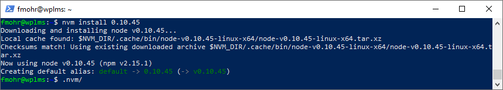
This allows me to try and run ghost again. This time with the (presumably) correct version of node.
NODE_ENV=production ~/.nvm/v0.10.45/bin/node index.js
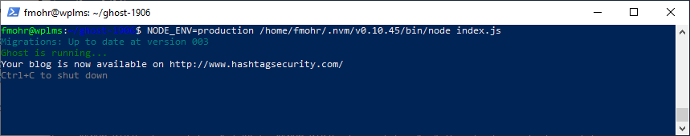
It works, even if the message is incorrect as the server cannot possibly run on the public domain name. This is easily solved with netstat.
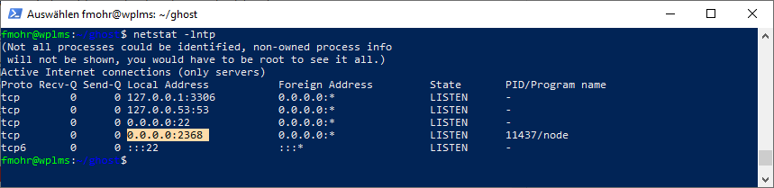
And with another port forwarding rule for my VM, this should be accessible as well.
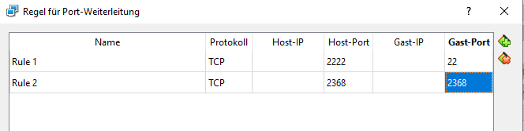
Look at it. It runs so smoothly, I almost want to keep using ghost. But that would mean installing updates and maintaining my own server and I've grown lazy, apparently.
This is it for today, how I will move this content to blogger is a story for another time. :)